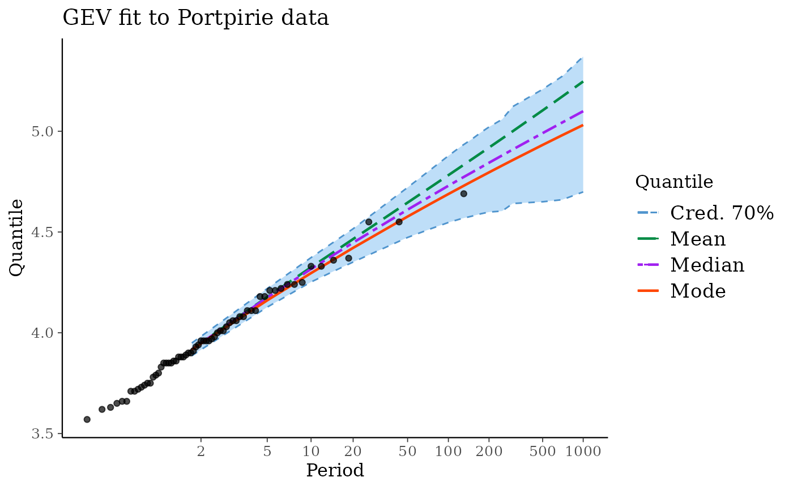
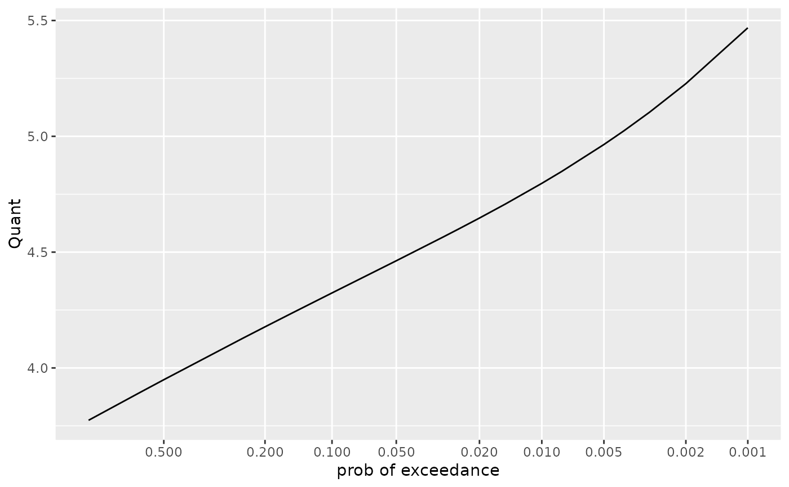
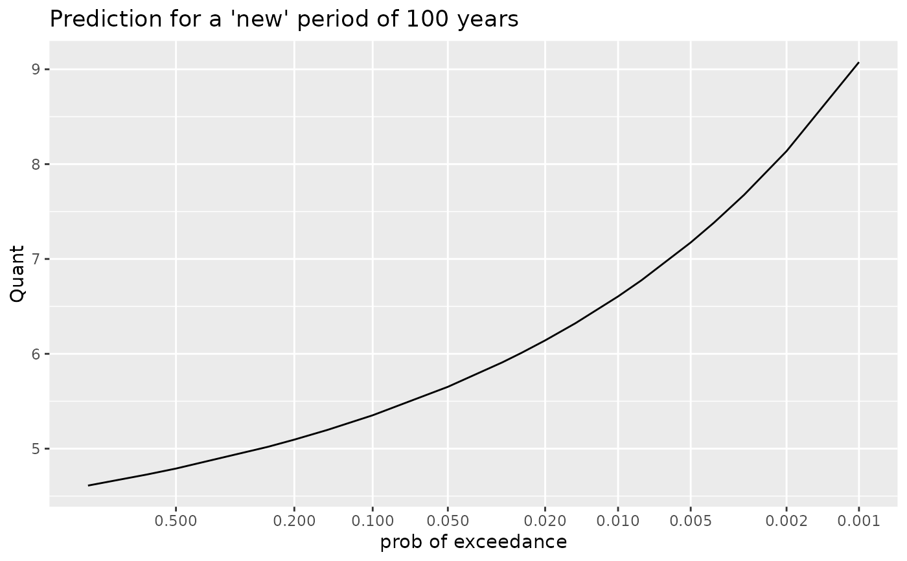

Create a Posterior for a GEV Model
GEVBayes0.RdCreate a "Poor Man's" Posterior for a GEV model using MCMC iterates.
Usage
GEVBayes0(MCMC, blockDuration = 1.0,
MAP = NULL,
yMax = NULL,
nMax = length(yMax))Arguments
- MCMC
An object that can be coerced into a matrix containing the MCMC iterates. It should have the burnin period removed and be thinned if necessary.
- blockDuration
The block duration given as a single positive numeric value. The GEV distribution which parameters are sampled in
MCMCrefers to the maximum on a period with durationblockDuration.- MAP
An optional vector of Maximum A Posteriori for the parameter vector. Should be named with names matching the colnames of
MCMC.- yMax
An optional vector of observations.
- nMax
An optional number of observations. Useful only when
yMaxis not given.
Value
An object with class "GEVBayes0" inheriting from
"Bayes0". This object can be used to produce RL plots.
Note
The argument yMax is intended for the classical
framework where block maxima are used corresponding to a
constant block duration. This is equivalent to using the
potData argument with the value
potData(MAX.data = as.list(yMax), MAX.effDuration =
rep(blockDuration, length(yMax)).
See also
RL method to generate a data frame of
"classical" return levels (as shown on a classical RL plot),
predict.GEVBayes0 to generate a data frame of
predictive return levels (as shown on a predictive RL plot).
Examples
require(revdbayes)
## ========================================================================
## Portpirie data. Note that 'yMax' is only used for graphics later
## ========================================================================
prior <- set_prior(prior = "flatflat", model = "gev")
post <- rpost_rcpp(n = 10000, model = "gev", prior = prior,
data = portpirie)
## retrieve the MAP within the object
MAP <- post$f_mode
names(MAP) <- c("loc", "scale", "shape")
postGEV0 <- GEVBayes0(MCMC = post$sim_vals, yMax = portpirie, MAP = MAP)
## ========================================================================
## some methods
## ========================================================================
summary(postGEV0)
#> GEV Model Bayesian Inference
#> o Block duration : 1
#> o Number of blocks used: 65
#> o Number of MCMC iterates: 10000
#> o Posterior mean [sd]:
#> loc scale shape
#> 3.875 [0.029] 0.207 [0.022] -0.034 [0.100]
coef(postGEV0)
#> loc scale shape
#> mean 3.874539 0.2068635 -0.03386931
#> median 3.874232 0.2052087 -0.04113732
#> mode 3.874750 0.1980440 -0.05010991
vcov(postGEV0)
#> loc scale shape
#> loc 0.0008364864 0.0002086140 -0.001008695
#> scale 0.0002086140 0.0004817316 -0.000719470
#> shape -0.0010086955 -0.0007194700 0.010072483
## ========================================================================
## RL plot
## ========================================================================
RL0 <- RL(postGEV0)
autoplot(postGEV0) + ggtitle("GEV fit to Portpirie data")

## ========================================================================
## predictive distribution
## ========================================================================
pred <- predict(postGEV0)
autoplot(pred)

autoplot(predict(postGEV0, newDuration = 100)) +
ggtitle("Prediction for a 'new' period of 100 years")
